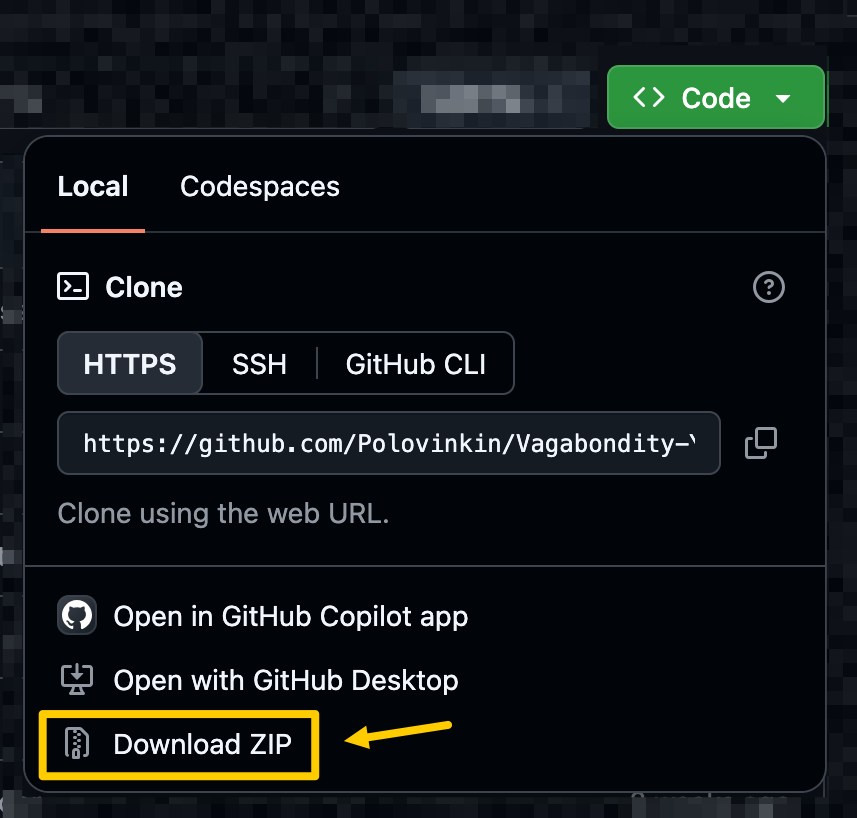

Good news, it's actually quite easy to install and use — you don't have to be an IT professional or be proficient with computers to do it! The first setup usually takes about 10 minutes. You only complete steps 1–5 once; later launches use the single command in step 6.
01
Download the app and open its folder in Terminal
Open the project on GitHub, choose Code → Download ZIP, extract the ZIP, and find the Vagabondity-YouTube-Localizer folder.
It doesn't matter where this folder is located. The app stays in this folder and is not installed like a typical application.

Alternatively, use the button below to download the ZIP directly from GitHub.
Drag the extracted project folder from Finder into Terminal.
Press Enter.
⊞ Windows
Open the extracted folder in File Explorer.
Click the address bar.
Type powershell.
Press Enter.
02
Install uv
What is uv?
It is a popular developer tool that installs the exact Python version and packages this app needs. It does not run continuously or use CPU and memory when you are not using it. You do not need to install Python separately.
Copy the command for your operating system, paste it into Terminal, and press Enter.
This is the core of the local-first model: the OAuth app belongs to you. YT Localizer never asks you to sign in to somebody else's Google Cloud project.
1
Open Google Cloud Console, create or select a project, and make it active. A name such as YT Localizer is fine.
!While your OAuth app stays in Testing mode, Google normally expires its authorization after seven days. Repeating sign-in with your test-user account restores it.
05
Add at least one translation provider
DeepL is the simplest starting option. Provider plans, free allowances, availability, and billing requirements can change, so check the provider's current terms.
Copy the key from DeepL → Account → API Keys & Limits.
Open config/settings.toml in a text editor and replace the placeholder:
settings.toml
[deepl]
api_key = "paste_your_deepl_api_key_here"
Prefer Google Cloud Translation?Show optional setup⌄
Enable Cloud Translation API and billing in the same Google Cloud project.
Create a service account with the Cloud Translation API User role.
For that service account, choose Keys → Add key → Create new key → JSON.
Rename the downloaded file to translate_key.json and place it in config.
06
Start the app
Run this from the project folder. The first launch takes longer while uv downloads Python 3.12 and the exact locked packages.
Terminal
uv run vagabondity-youtube-localizer
Complete Google's authorization once.
Sign in with the account you added under Test users and approve the requested YouTube access. A “Google hasn't verified this app” warning is expected for your personal OAuth app in Testing mode.
If you see Error 403: access_denied, confirm that the selected account is listed under Google Auth Platform → Audience → Test users.